Префектура Хоккайдо · Нисэко · лето
Лето в Нисэко: гора Йотэй, болото-зеркало, сплав и старый дом с айнской галереей
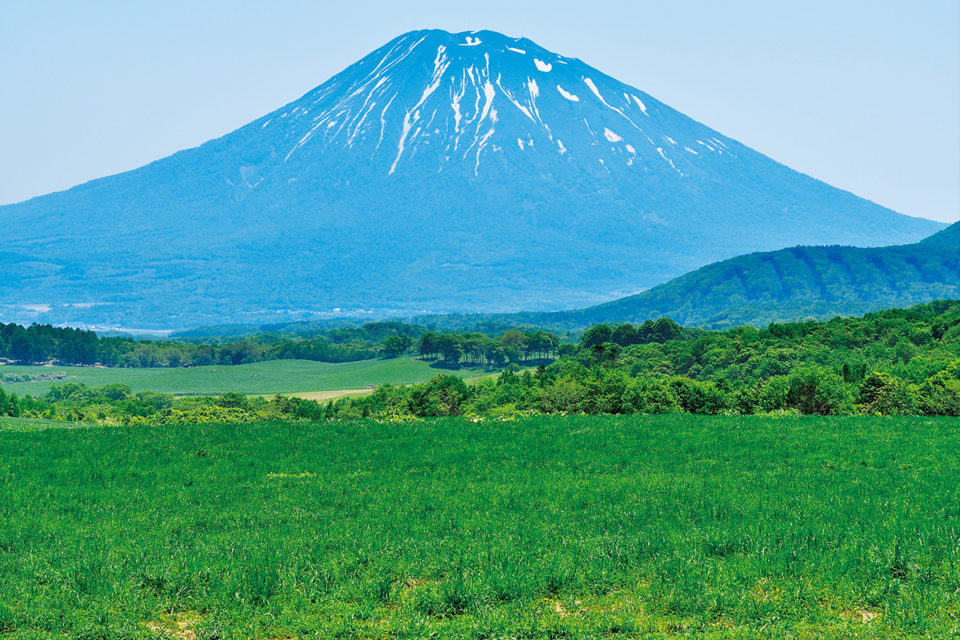
Нисэко гремит на весь мир как курорт с лучшим пушистым снегом, но летом сюда приезжают немногие. Британский фотограф, который с 1994 года живёт на Хоккайдо, уверен, что именно в это время Нисэко лучше всего.
Место
Курорт, который любят зимой
Нисэко называют не один город, а целый край на юго-западе Хоккайдо. Его окружают горы: гора Йотэй, которую за сходство с Фудзи прозвали Эдзо-Фудзи (Эдзо это старое название Хоккайдо), и хребет Нисэко с вершиной Нисэко-Аннупури. Посередине течёт река Сирибэцу, а по её берегам лежат пять небольших городков. Три из них, Куттян, Нисэко и Ранкоси, вместе образуют туристический район Нисэко, курорт международного уровня.
Слава у него зимняя: Нисэко считается одним из лучших мест в мире для катания по пушистому снегу. В сезон сюда съезжаются лыжники со всего света, и в посёлках звучит столько языков, что легко забыть, в какой ты стране. О том, что летом здесь не хуже, знают гораздо меньше людей.
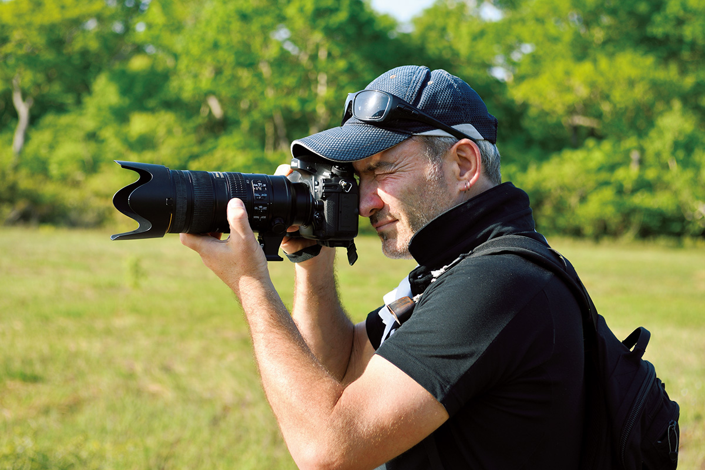
Гид
Фотограф, который приехал на велосипеде
Летний Нисэко показывает британский креативный директор, фотограф и художник. В 13 лет он переехал с семьёй в Австралию, а в 24 года увидел в фотоальбоме пейзажи Хоккайдо и уже не мог о них забыть.
«Я привёз с собой велосипед и объехал весь Хоккайдо. Карты у меня не было, только велосипед и палатка»
создатель SOMOZA
В 1994 году он перебрался в Саппоро по программе рабочих каникул, своими руками переделал старый жилой дом и открыл в нём ресторан. Его вкус понравился гостям, и вскоре ему стали заказывать оформление интерьеров. Около 2004 года он поселился в Нисэко. Он участвовал в создании рёкана Zaborin, который стал одной из самых известных гостиниц Японии, а в 2018 году был занят собственным проектом по соседству со своим домом: SOMOZA.
SOMOZA
Дом из Тотиги у серной речки
Участок, где стоит SOMOZA, он заметил около 2008 года, когда ходил по горам.
«Я смотрел сверху и думал: хорошее место. Здесь были пастбища, и всё напоминало мне родной Йоркшир или Озёрный край»
создатель SOMOZA
Землю он купил, но вся она заросла густым курильским бамбуком: чтобы осмотреться, приходилось залезать на дерево. Расчищал участок он сам, сам садился за руль строительной техники. «Мне нравится осваивать новые земли», говорит он.
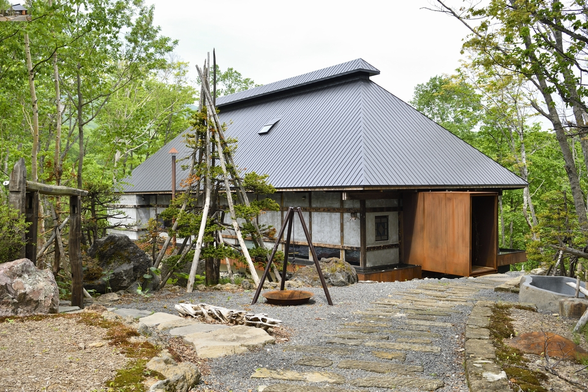
Сам дом приехал издалека. Это старинный дом, построенный около 150 лет назад в префектуре Тотиги, к северу от Токио. Хозяина пришлось навещать много раз, пока тот не поверил в серьёзность намерений и не согласился его отдать. Дом разобрали и собрали заново на Хоккайдо.
Столбы и балки остались прежними, а стены покрыли штукатуркой, в которую подмешали тростник со старой соломенной крыши: так дом сохранил свой прежний дух. Рядом с ними стальные листы и антикварные материалы, собранные вместе, как современная инсталляция. В доме есть ресторан, галерея и чайная комната. В 2018 году рядом строили домики для ночлега, а в планах были огород, лошади и коровы.
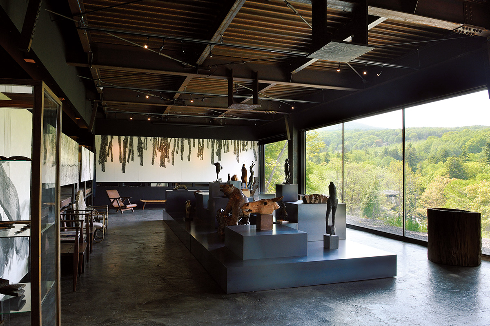
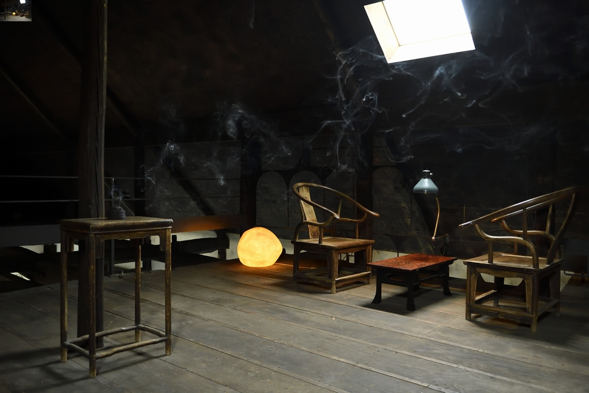
Старое и новое, японское и европейское здесь не спорят, а дополняют друг друга, и именно ради этого в SOMOZA приезжает много гостей из-за границы.
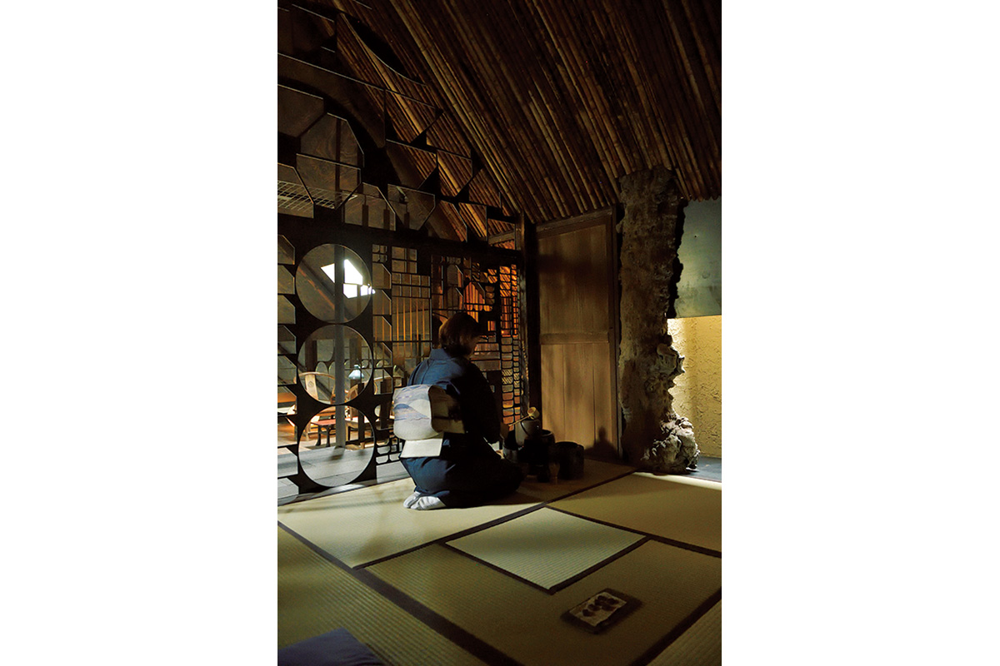
В 2026 году SOMOZA работает по-другому: гостей принимают только на ужин по предварительной записи с четверга по воскресенье, а галерею показывают перед ужином, отдельно её не посещают. Домики для ночлега открылись под названием SHIGUCHI, о них отдельная статья.
SOMOZA
- Адрес
- префектура Хоккайдо, уезд Абута, Куттян, Ханадзоно, 78-5
- Телефон
- +81 136-55-8741
- Часы работы
- 10:00–16:00 (последний заказ в 14:00), ужин по предварительной записи
- Выходные
- с понедельника по четверг
- Сайт
- somoza.jp
Тишина
Кагами-нума: болото-зеркало
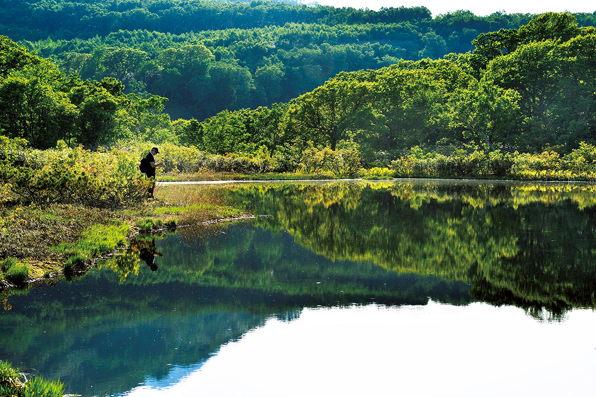
Своё чувство красоты он объясняет просто: доверять первобытным ощущениям и слушать собственный внутренний голос.
«Сначала важно, что у тебя на душе. А ещё важно одиночество. Время наедине с собой очень нужно, в городе слишком много шума. Летом в Нисэко немноголюдно, и это лучшее место, чтобы прийти в себя. К тому же здесь не жарко. Если побыть среди природы, начинаешь слышать себя»
создатель SOMOZA
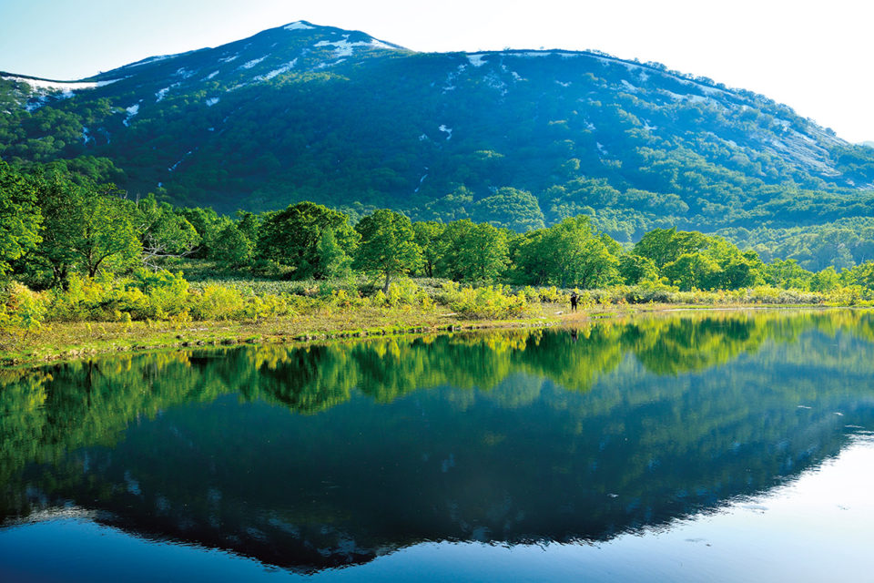
Лучший способ провести здесь лето, по его словам, это пешие прогулки. Самый лёгкий из его любимых маршрутов ведёт к Кагами-нуме, что значит «болото-зеркало».
«Если хочется немного пройтись, иди к Кагами-нуме. Про неё мало кто знает, поэтому людей там почти нет»
создатель SOMOZA
Вокруг болота проложен дощатый настил, идти легко, а кое-где стоят скамейки.
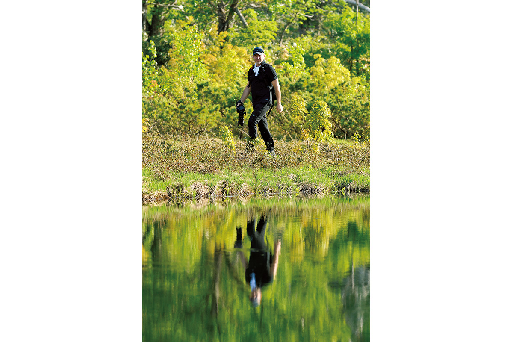
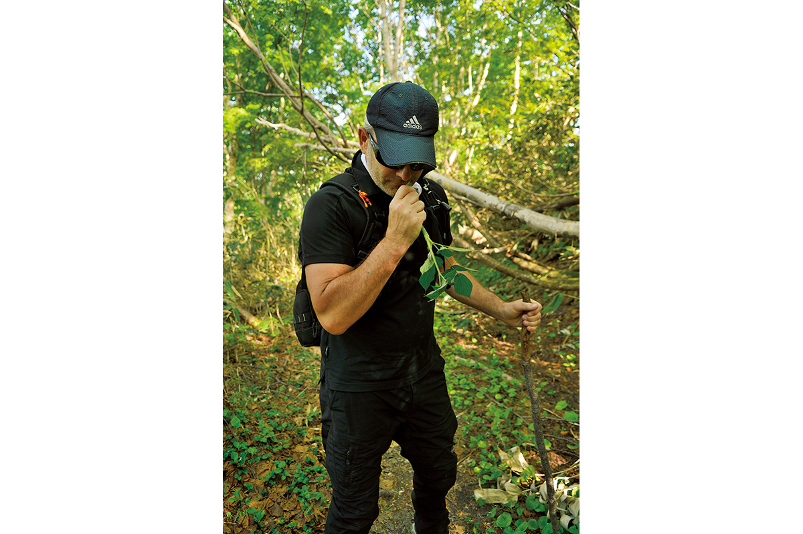
«Иногда встаю пораньше, беру с собой кофе и сижу здесь один. Утром хорошо, но и вечером красиво. А в плохую погоду меня тянет в горы ещё сильнее. Туман, перемены погоды бодрят. В ясный день расслабляешься, а в непогоду все чувства обостряются»
создатель SOMOZA
Для человека, который черпает вдохновение в природе, такие часы бесценны. Природа будит все пять чувств и открывает шестое.
Горы
Две вершины над онсэном Госики
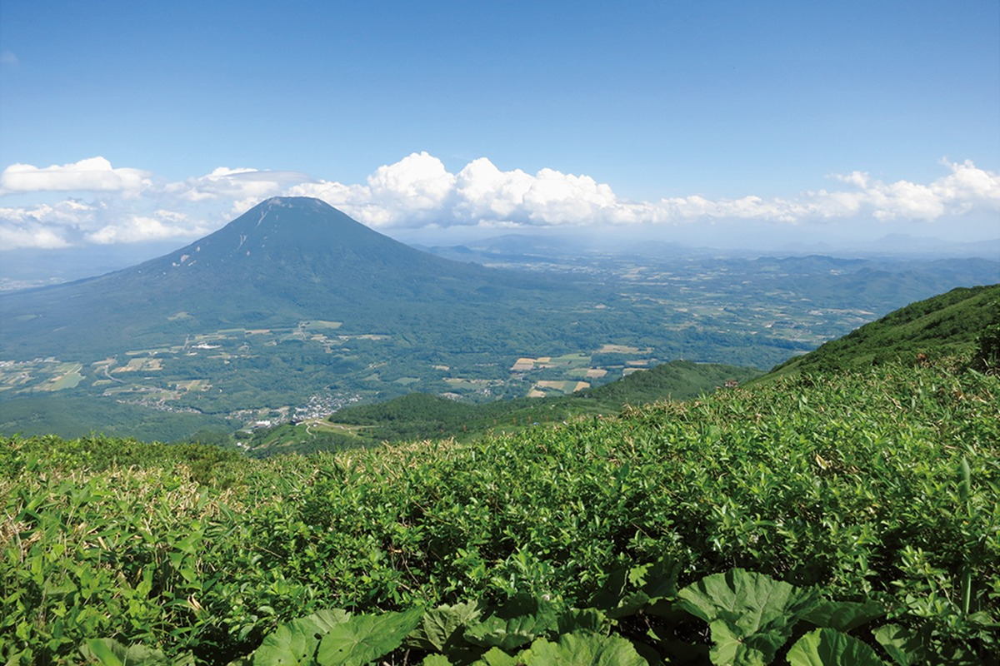
Если хочется маршрута посерьёзнее, есть две вершины. Обе тропы начинаются у онсэна Госики. На Нисэко-Аннупури гид в 2018 году поднимался вместе с детьми-школьниками, а вторая гора, Ивао-Нупури, нравится ему особенно.
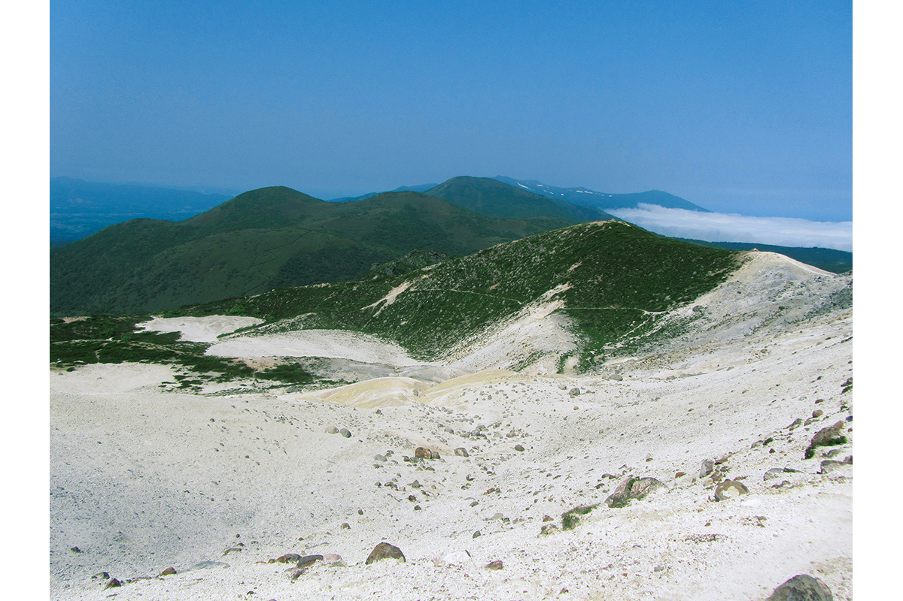
«Ивао-Нупури необычная гора: на ней много голой земли. Я люблю камни, а там они валяются повсюду. По дороге можно полюбоваться высокогорными цветами, а с вершины видны горы Нисэко и даже море»
создатель SOMOZA
После прогулки стоит заглянуть в онсэны: в округе есть прекрасные горячие источники, и Госики среди них. Именно когда он приехал в онсэн Госики, он и нашёл место для своего дома и SOMOZA.
Вода
Сплав, каньонинг и морской каяк
Пешие прогулки не единственное летнее развлечение Нисэко. Река Сирибэцу и горные ручьи дают и другие способы провести день.
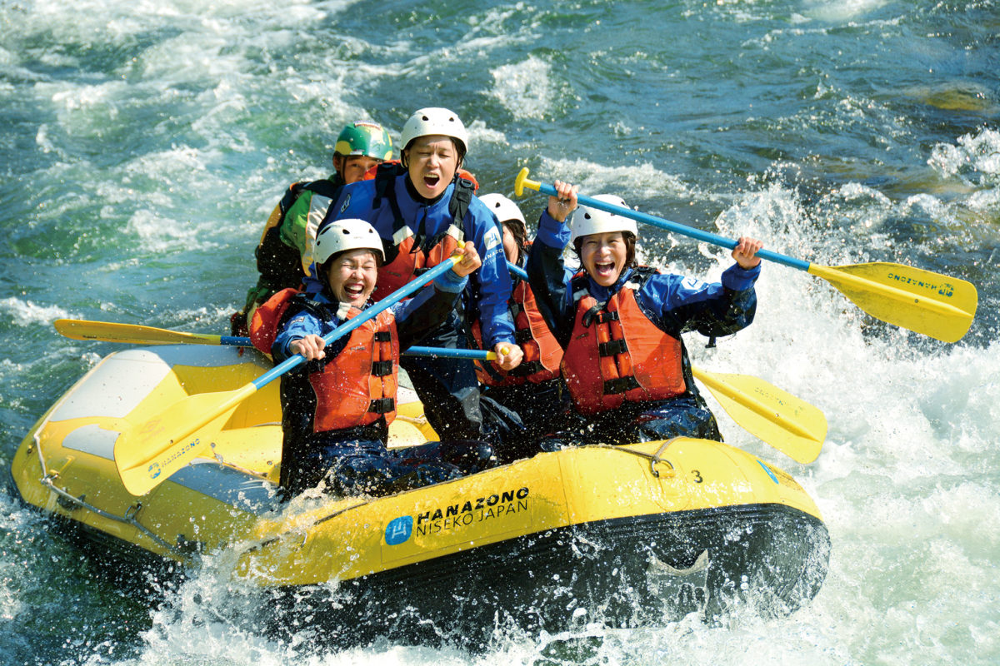
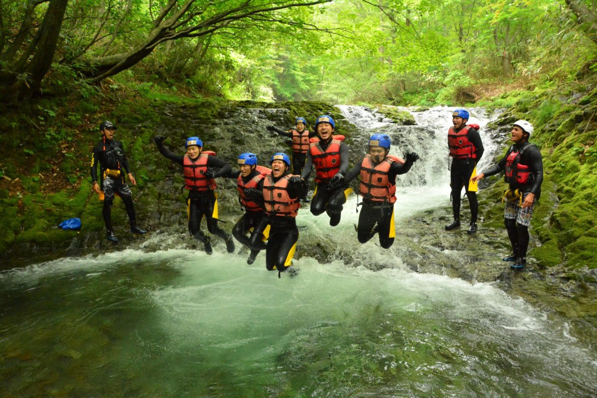
Сякотан
Полуостров цвета индиго
Если есть время, стоит доехать до полуострова Сякотан, около двух часов на машине от Нисэко. Название идёт от айнского «сяку котан», «летняя деревня». Вместе с Нисэко полуостров входит в квазинациональный парк Нисэко-Сякотан-Отару-Кайган.
Вдоль берега тянется дорога над морем глубокого прозрачного синего цвета, его так и называют: «синий Сякотан». По пути встречаются мысы Камуи и Сякотан с захватывающими видами, летом цветут высокогорные растения, а ещё лето здесь сезон свежих морских ежей.
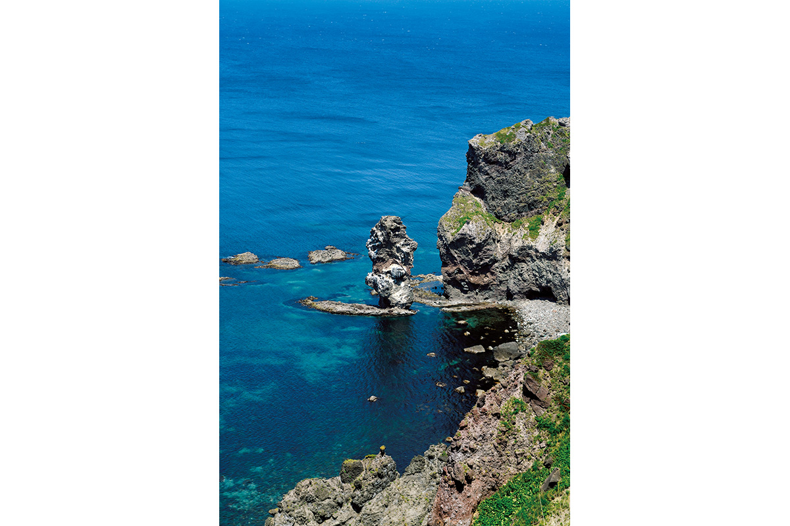
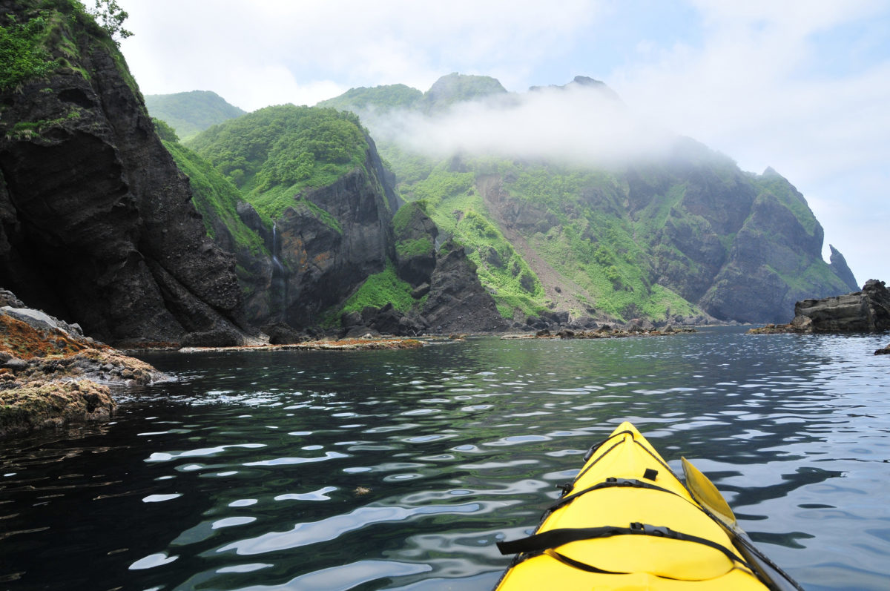
Полуостров вполне оправдывает своё имя: летом здесь есть всё, ради чего стоит ехать на Хоккайдо: горы и море, вкусная еда и прохладный воздух.
Фото: Мидзуаки Вакахара.